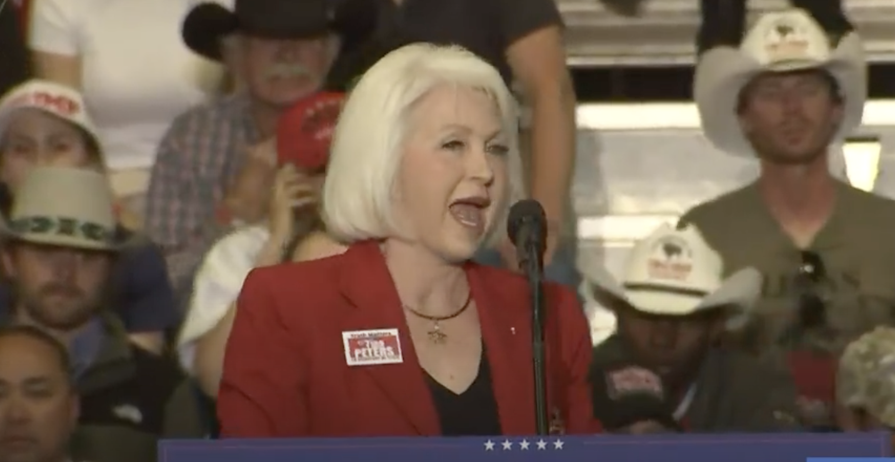

Who Is Tina Peters to Herself?
The grief, the losses, the identity she built from them — and the worldview that filled the gap. How personal trauma can lay the groundwork for radical belief.


On May 28, 2017, Petty Officer 1st Class Remington Peters jumped from a helicopter over the Hudson River while waving an American flag through colored smoke. A member of the Navy SEAL's Leap Frogs demonstration team, Remington Peters had made the jump countless times before thousands of spectators.
But this time, his parachute failed to catch him. Remington Peters, the only child of Tina Peters, fell to his death on Memorial Day, changing his mother's life forever.
While her present image is defined by political drama, Tina Peters' past is defined by loss. Before she became the first election official in U.S. history convicted in connection with efforts to overturn a presidential election, Tina Peters was just Tina — a mother without her son.
"She was a grieving mom. And I just was her friend."
Dee Valdez Pepper · Peters supporter
"She was a grieving mom," said Dee Valdez Pepper, a Republican activist and close Tina Peters supporter. "And I just was her friend."
Friends and supporters described Remington Peters' death as central to Tina Peters' emotional and political transformation. At her 2024 sentencing hearing, Tina Peters displayed photographs of Remington while asking the court for probation.

The month after Remington Peters died, Tina Peters and her husband Thomas Peters legally separated after more than three decades of marriage. Thomas Peters suffered from Parkinson's disease and dementia, and court records show the couple formalized their separation in January 2018.
In October 2021 — the same month Colorado's secretary of state suspended Tina Peters from overseeing elections in Mesa County — Tina Peters filed documents revoking her power of attorney over Thomas Peters and transferring ownership of a home he had purchased after their separation into her own name.
Thomas Peters later sued her in civil court. An attorney familiar with the litigation said the issue centered on ownership of the property.
"Mr. Peters purchased that property with his own funds after the separation," the attorney said. "The transfer was not authorized. We are seeking to have it returned."
Tina Peters denied wrongdoing and instead publicly accused Mesa County District Attorney Dan Rubinstein of coercing Thomas Peters, who by then suffered from advanced dementia, into signing divorce-related paperwork. Rubinstein denied the accusation, and reporting uncovered no evidence supporting Peters' claims.
Thomas Peters died Dec. 31, 2023, while Tina Peters was preparing for trial.
"Today 1/11 my husband and I would've been married 37 years. Instead he died of neglect less than 2 weeks ago because of the criminal acts of those persecuting and prosecuting me."
Tina Peters · Social media post, January 2024
Days later, on what would have been their 37th wedding anniversary, Tina Peters posted on social media that her husband had died "because of the criminal acts of those persecuting and prosecuting me."
Alan Wolfelt, a Fort Collins grief counselor who specializes in traumatic bereavement, said Tina Peters' public statements reflected patterns sometimes seen after multiple compounding losses.
"When someone experiences repeated major losses — a child, a marriage, a public identity — the mind often searches for a framework that makes the suffering feel explainable," Wolfelt said. "Sometimes that framework becomes conspiratorial. It can feel more tolerable than randomness."
People who knew Tina Peters before and after her political rise said her public framing of her grief evolved over time.
"When she was running for clerk, it was always described as an accident," said Sheila Rae, a former colleague. "After she got into legal trouble, suddenly there were suggestions that the FBI was involved."
After federal agents searched Tina Peters' home following the 2021 election equipment breach, supporters circulated claims online alleging investigators disturbed Remington Peters' belongings, including a footlocker Tina Peters reportedly kept unopened after his death. The allegation became a rallying point in pro-Tina Peters media circles, though law enforcement never publicly addressed the claim.
Sandra Oates, a Grand Junction resident who said she knew Tina Peters personally, noticed the shift as well.
"The first time I heard her speak about it, it was a tragedy," Oates said. "Later it became part of the broader story about people being out to get her."
Rachel Nielson, a University of Denver researcher who studies political radicalization, said Tina Peters' trajectory mirrors patterns researchers frequently observe.
"You often see people experiencing instability — grief, isolation, professional pressure — become more susceptible to movements that offer certainty and community," Nielson said. "The movement doesn't create vulnerability, it finds it."
Prosecutors later argued that Tina Peters became "fixated" on election conspiracies and was motivated in part by notoriety.
Supporters reject that characterization. Valdez Pepper, who became one of Tina Peters' closest allies after meeting her at a Republican event in 2022, now organizes a weekly prayer call dedicated to Peters and her legal fight.
"She's a very strong woman of God," Valdez Pepper said. "She has more faith than anyone I've ever seen."
But Tina Peters' brother-in-law, Jack Peters, had much harsher sentiments. He publicly accused her of exploiting the family deaths for sympathy.
In interviews, podcasts, court statements and social media posts, Tina Peters casts herself as a whistleblower — an elected official who discovered evidence of wrongdoing, attempted to report it and was punished for refusing to stay silent.
"I've never done anything with malice to break the law. I've only wanted to serve the people of Mesa County."
Tina Peters · Sentencing hearing, Oct. 3, 2024
Her supporters adopted the same framing.
"What can happen to Tina can happen to any of us," Valdez Pepper said.
Greg Holloway, a pastor who publicly prayed with Tina Peters during her legal proceedings, said she viewed her situation through a spiritual lens.
"She sees this as a calling," Holloway said. "In her mind, she was put there for a reason."
At sentencing, Tina Peters spoke for nearly 40 minutes. She displayed photographs of her late son and former husband while pleading for probation.
In May 2026, Tina Peters submitted a clemency application to Gov. Jared Polis and included an acknowledgment that she had made mistakes and would comply with the law moving forward if released.
The statement marked a notable departure from Tina Peters' prior public posture. For years, she had insisted she had done nothing wrong and continued making appearances from prison through conservative media and political events.
Wolfelt said that if Tina Peters' admission reflected genuine acceptance of responsibility, it would represent a difficult psychological shift.
"Building your identity around being right makes admitting fault extraordinarily difficult," Wolfelt said. "Whether that shift was sincere or strategic is something only she can answer. Only Tina knows Tina."
Peters was released on parole in June 2026. Her criminal conviction stands.